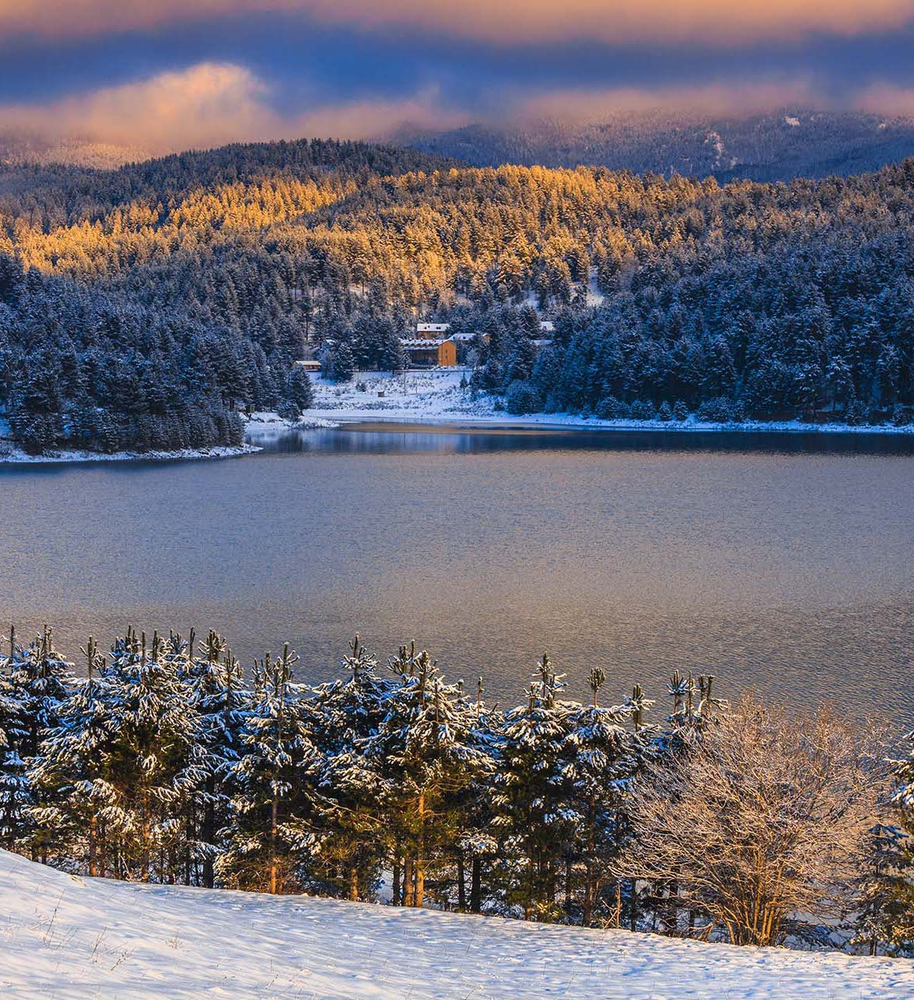
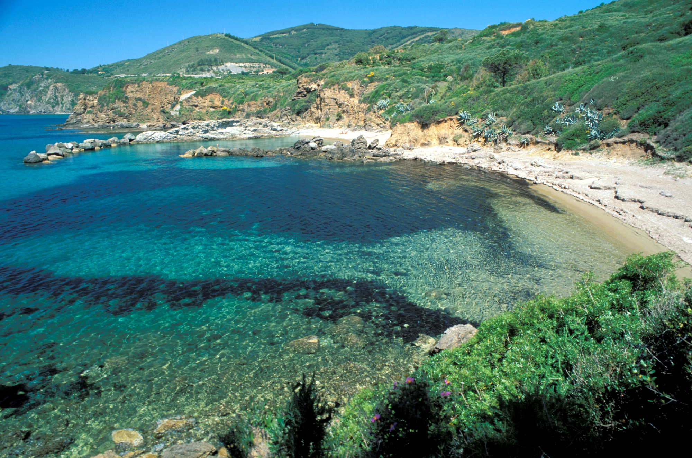

Parchi
Esplora i maestosi parchi nazionali italiani: luoghi incantati dove montagne,
coste e antiche foreste raccontano la storia e la bellezza senza tempo del nostro Paese.
 Trekking
Trekking
 Vulcani Attivi
Vulcani Attivi
 Sentieri
Sentieri

Parco Nazionale dell'Etna
Parco Nazionale del Vesuvio

Parco Nazionale della Sila

Parco Nazionale dell'Arcipelago Toscano

Parco Nazionale delle cinque terre

Parco Nazionale d'Abruzzo, Lazio e Molise

Parco Nazionale del Gran Paradiso

Parco Nazionale del Cilento, Vallo di Diano e Alburni

Parco Nazionale del Pollino

Parco Nazionale delle Dolomiti Bellunesi

Parco Nazionale dell'Arcipelago di La Maddalena

Parco Nazionale delle Foreste Casentinesi, Monte Falterona e Campigna